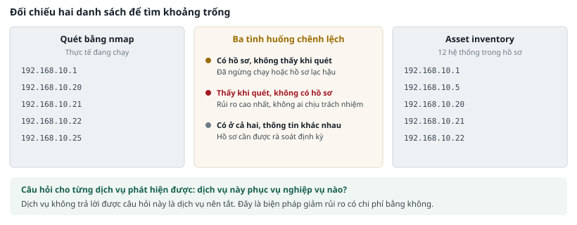
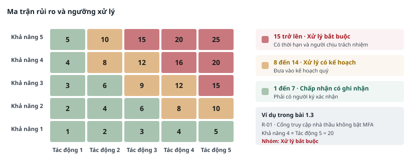
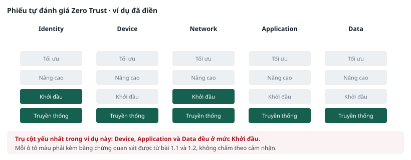

PHẦN H · BÀI THỰC HÀNH CHUYÊN ĐỀ 1#
Tổng quan rủi ro và tư duy bảo mật
- Làm quen môi trường và kiểm chứng đường đi mạng
- Lập bảng kiểm kê hệ thống
- Xếp hạng rủi ro theo thang điểm thống nhất
- Tự đánh giá năm trụ cột Zero Trust
THỜI LƯỢNG 20 PHÚT
Bài 1.1 · Làm quen môi trường và kiểm chứng đường đi mạng#
Mục tiêu: xác nhận môi trường hoạt động đúng và hiểu được vì sao mọi lưu lượng đều đi qua firewall.
Điều kiện tiên quyết#
- Đã hoàn thành quy trình kiểm tra ở mục 2.4.
- Ba máy ảo đang bật.
- Đã tạo snapshot SACH.
Dữ liệu và công cụ#
| Hạng mục | Chi tiết |
|---|---|
| Máy sử dụng | Kali (thao tác chính), pfSense (xem giao diện web) |
| Công cụ | ping, traceroute, ip route, trình duyệt web |
| File dữ liệu | pfsense_filterlog.log |
Các bước thực hiện#
Bước 1 — Xem đường đi của gói tin
Bước 1
# Trên Kali: xem bảng định tuyến của chính máy mình
ip route show
# Kết quả sẽ có một dòng dạng:
# default via 192.168.20.1 dev eth0
# Nghĩa là mọi kết nối ra ngoài dải 192.168.20.0/24
# đều phải đi qua firewall ở địa chỉ 192.168.20.1
# Kiểm chứng bằng cách dò đường tới server Ubuntu
traceroute -n 192.168.10.20
Kết quả của traceroute cho thấy hai chặng: chặng thứ nhất là firewall, chặng thứ hai là server đích. Đây là bằng chứng trực quan rằng hai máy nằm ở hai phân đoạn khác nhau.
Bước 2 — Mở giao diện quản trị firewall
Bước 2
# Trên Kali, mở trình duyệt và truy cập:
# https://192.168.20.1
# Tài khoản: hocvien Mật khẩu: LabMinhAn2026
# Trình duyệt sẽ cảnh báo chứng thư số không hợp lệ.
# Đây là chứng thư tự ký của thiết bị, chấp nhận và đi tiếp.
# Ghi nhớ hiện tượng này — sẽ được phân tích ở Chuyên đề 2.
Vào mục Trạng thái, chọn Log hệ thống, rồi chọn thẻ Firewall. Đây là nơi hiển thị log kết nối theo thời gian thực. Quan sát khoảng một phút để thấy các dòng mới xuất hiện.
Bước 3 — Sinh một kết nối và tìm lại trong log
Bước 3
# Trên Kali: tạo một kết nối tới cổng đóng trên máy Ubuntu
nc -zv 192.168.10.20 4444
# Ngay sau đó, trên giao diện firewall, tìm dòng tương ứng
# Hoặc tìm trong file log đã cấp sẵn theo cấu trúc giống hệt:
cd ~/lab/dulieu
head -3 pfsense_filterlog.log
Bước 4 — Hiểu cấu trúc một dòng log firewall
Mỗi dòng log firewall là một chuỗi các trường ngăn cách bởi dấu phẩy. Bảng dưới liệt kê các trường sẽ được dùng trong toàn bộ bộ lab. Học viên không cần nhớ, chỉ cần biết tra ở đâu.
| Số thứ tự | Tên trường | Ý nghĩa |
|---|---|---|
| 5 | Giao diện | Cổng mạng nhận gói tin: em0 là hướng Internet, em1 là mạng nội bộ, em2 là phân đoạn Kali |
| 7 | Hành động | pass là cho qua, block là chặn |
| 8 | Chiều | in là đi vào giao diện, out là đi ra |
| 17 | Giao thức | tcp, udp hoặc icmp |
| 18 | Độ dài | Số byte của gói tin. Trường dùng để tính khối lượng dữ liệu |
| 19 | Địa chỉ nguồn | Nơi gói tin xuất phát |
| 20 | Địa chỉ đích | Nơi gói tin đi tới |
| 21 | Cổng nguồn | Cổng phía gửi |
| 22 | Cổng đích | Cổng phía nhận. Trường cho biết dịch vụ nào đang được truy cập |
Bước 4
# Thử lấy riêng một vài trường để làm quen
cd ~/lab/dulieu
# In ra: hành động, địa chỉ nguồn, địa chỉ đích, cổng đích
awk -F',' '{print $7, $19, $20, $22}' pfsense_filterlog.log | head -10
# Đếm xem có bao nhiêu kết nối bị chặn
awk -F',' '$7=="block"' pfsense_filterlog.log | wc -l
Kết quả mong đợi#
| Bước | Kết quả đúng |
|---|---|
| Bảng định tuyến | Có dòng default via 192.168.20.1 |
| Dò đường tới server | Hai chặng, chặng đầu là 192.168.20.1 |
| Giao diện firewall | Mở được, thấy log cập nhật theo thời gian thực |
| Đếm số kết nối bị chặn | Khoảng 14 nghìn dòng trên tổng số 79.178 dòng |
Phiếu ghi nhận 1.1#
Làm bài ngay tại đây · Phiếu ghi nhận 1.1
| Câu hỏi | Trả lời của học viên |
|---|---|
| Cổng mạng nào của firewall hướng ra Internet? | |
| Máy Kali và máy Ubuntu có cùng network segmentation không? Căn cứ vào đâu? | |
| Trường thứ mấy trong log cho biết số byte của gói tin? | |
| Nếu một máy nội bộ gửi dữ liệu ra Internet, log firewall có ghi lại không? Log của máy đó có ghi không? |
Mức mở rộng#
- Viết một lệnh đếm số kết nối bị chặn theo từng cổng đích, sắp xếp giảm dần. Cổng nào bị quét nhiều nhất từ bên ngoài?
- Tìm giờ trong ngày có nhiều kết nối bị chặn nhất. Gợi ý: trường thời gian nằm ở đầu dòng, dùng cut để lấy hai ký tự giờ.
Xử lý sự cố#
| Hiện tượng | Cách khắc phục |
|---|---|
| ping tới 192.168.20.1 không phản hồi | Máy pfSense chưa khởi động xong. Chờ thêm 2 phút. Nếu vẫn không được, kiểm tra card mạng của máy ảo Kali đã gắn đúng mạng nội bộ chưa |
| Không mở được giao diện web firewall | Kiểm tra đã gõ https chứ không phải http. Thử xoá bộ nhớ đệm trình duyệt |
| traceroute báo lệnh không tồn tại | Chạy: sudo apt install traceroute. Nếu không có mạng, dùng lệnh thay thế: ping -R 192.168.10.20 |
GHI NHỚ
Điểm cần nhớ của bài này: log firewall nhìn thấy những thứ mà log hệ điều hành không nhìn thấy, đặc biệt là địa chỉ đích và khối lượng dữ liệu đi ra. Điều này sẽ có ý nghĩa quyết định ở Chuyên đề 4.
THỜI LƯỢNG 25 PHÚT
Bài 1.2 · Asset inventory#
Mục tiêu: lập được bảng asset inventory đầy đủ bằng cách kết hợp kết quả quét kỹ thuật với hồ sơ quản lý.
Điều kiện tiên quyết#
- Đã hoàn thành bài 1.1.
- Máy Kali và Ubuntu đang bật.
Dữ liệu và công cụ#
| Hạng mục | Chi tiết |
|---|---|
| Máy sử dụng | Kali |
| Công cụ | nmap, cat, column |
| File dữ liệu | kiem_ke_tai_san.csv, danh_sach_nhan_su.csv |
Các bước thực hiện#
Bước 1 — Quét phát hiện máy đang hoạt động
CẢNH BÁO
Chỉ quét trong hai dải mạng của lab. Đây là thao tác duy nhất trong bài có tác động lên hệ thống sống.
Bước 1
cd ~/lab
# Phát hiện máy đang hoạt động trong mạng nội bộ
nmap -sn 192.168.10.0/24
# Phát hiện dịch vụ và phiên bản trên server Ubuntu
# Tuỳ chọn -T3 để quét chậm lại, tránh làm nghẽn máy ảo
nmap -sV -T3 192.168.10.20
Lệnh thứ hai chạy khoảng 60 đến 90 giây. Trong lúc chờ, đọc trước Bước 2.
Bước 2 — Đọc hồ sơ kiểm kê đã có của tổ chức
Bước 2
cd ~/lab/dulieu
# Xem bảng kiểm kê tài sản ở dạng dễ đọc
column -s, -t kiem_ke_tai_san.csv | less -S
# Bấm phím q để thoát
# Đếm số hệ thống có chứa dữ liệu cá nhân
grep -c "Có dữ liệu cá nhân" kiem_ke_tai_san.csv
# Liệt kê các hệ thống ở mức quan trọng rất cao
grep "Rất cao" kiem_ke_tai_san.csv | cut -d, -f2,5

Bước 3 — Đối chiếu và tìm khoảng trống
So sánh danh sách máy phát hiện được ở Bước 1 với hồ sơ kiểm kê ở Bước 2. Trong thực tế, hai danh sách này gần như không bao giờ trùng khớp hoàn toàn. Chênh lệch chính là thứ cần tìm.
| Tình huống chênh lệch | Ý nghĩa và việc cần làm |
|---|---|
| Có trong hồ sơ, không thấy khi quét | Hệ thống đã ngừng hoạt động nhưng chưa cập nhật hồ sơ, hoặc đang tắt. Cần xác minh và cập nhật |
| Thấy khi quét, không có trong hồ sơ | Hệ thống nằm ngoài tầm quản lý. Đây là rủi ro cao nhất vì không ai chịu trách nhiệm vá lỗi và giám sát |
| Có ở cả hai nhưng thông tin khác nhau | Hồ sơ đã lạc hậu. Cần rà soát lại toàn bộ hồ sơ theo chu kỳ |
Bước 4 — Đánh giá tính cần thiết của từng dịch vụ
Với mỗi dịch vụ phát hiện được ở Bước 1, trả lời một câu hỏi duy nhất: dịch vụ này phục vụ nghiệp vụ nào? Dịch vụ không trả lời được câu hỏi này là dịch vụ nên tắt. Đây là biện pháp giảm rủi ro có chi phí bằng không.
Kết quả mong đợi#
- Quét dải 192.168.10.0/24 phát hiện được server Ubuntu và cổng LAN của firewall.
- Hồ sơ kiểm kê có tám hệ thống, trong đó sáu hệ thống chứa dữ liệu cá nhân.
- Ba hệ thống ở mức quan trọng rất cao: cơ sở dữ liệu kế toán, server backup và firewall biên.
- Trên server Ubuntu có ít nhất một dịch vụ không có lý do nghiệp vụ rõ ràng.
Phiếu ghi nhận 1.2#
Điền bảng dưới đây cho từng dịch vụ phát hiện được trên server Ubuntu. Dòng đầu là ví dụ mẫu.
Làm bài ngay tại đây · Phiếu ghi nhận 1.2
| # | Cổng | Dịch vụ | Phiên bản | Phục vụ nghiệp vụ nào | Cần thiết? |
|---|---|---|---|---|---|
| 1 | 22 | OpenSSH | 8.9p1 | Quản trị hệ thống từ xa | Có, nhưng nên giới hạn nguồn |
| 2 | |||||
| 3 | |||||
| 4 | |||||
| 5 |
Mức mở rộng#
- Trong hồ sơ nhân sự có một tài khoản thuộc diện đã nghỉ việc. Tài khoản đó là gì, và vì sao đây là rủi ro cần đưa vào sổ đăng ký ở bài 1.3?
- Trong hồ sơ nhân sự có hai service account. Giờ làm việc ghi nhận của chúng khác gì so với tài khoản người dùng, và điều đó có ích gì khi viết detection use case?
Xử lý sự cố#
| Hiện tượng | Cách khắc phục |
|---|---|
| nmap chạy rất lâu hoặc treo | Bấm Ctrl và C để dừng, chạy lại với tuỳ chọn -T3 và giới hạn cổng: nmap -sV -T3 -p 1-1000 192.168.10.20 |
| column hiển thị lệch cột | Do một ô có chứa dấu phẩy. Xem bằng lệnh cat kiem_ke_tai_san.csv thay thế |
| Không quét thấy máy nào | Kiểm tra lại kết quả bài 1.1. Nếu ping không thông thì quét cũng không thấy |
THỜI LƯỢNG 30 PHÚT
Bài 1.3 · Lập risk register#
Mục tiêu: chuyển kết quả kỹ thuật của hai bài trước thành một danh sách rủi ro có điểm số và thứ tự xử lý.
Điều kiện tiên quyết#
- Đã hoàn thành bài 1.1 và 1.2.

Thang điểm sử dụng#
Điểm rủi ro bằng tích của điểm khả năng và điểm tác động. Hai bảng dưới đây là thang điểm thống nhất cho toàn bộ nhóm. Không được tự đổi thang điểm giữa chừng.
| Điểm | Khả năng xảy ra | Mức tác động |
|---|---|---|
| 5 | Đã xảy ra, hoặc đang bị khai thác tự động trên diện rộng | Ngừng nghiệp vụ chính trên một ngày, hoặc lộ dữ liệu cá nhân quy mô lớn |
| 4 | Rất có khả năng xảy ra trong mười hai tháng tới | Ngừng nghiệp vụ chính dưới một ngày, hoặc lộ dữ liệu nội bộ nhạy cảm |
| 3 | Có khả năng xảy ra, đã ghi nhận ở tổ chức tương tự | Gián đoạn cục bộ, khắc phục trong giờ làm việc |
| 2 | Ít khả năng, cần điều kiện đặc thù mới xảy ra | Ảnh hưởng một bộ phận, không ảnh hưởng khách hàng |
| 1 | Rất khó xảy ra trên thực tế | Ảnh hưởng không đáng kể |
| Điểm rủi ro | Nhóm | Cách xử lý |
|---|---|---|
| Từ 15 trở lên | Xử lý bắt buộc | Đưa vào kế hoạch có thời hạn và người chịu trách nhiệm. Báo cáo lãnh đạo hằng tháng đến khi đóng |
| Từ 8 đến 14 | Xử lý có kế hoạch | Đưa vào kế hoạch quý. Nếu chưa xử lý được thì phải có biện pháp bù trừ tạm thời |
| Từ 1 đến 7 | Chấp nhận có ghi nhận | Ghi vào sổ, xem xét lại định kỳ. Việc chấp nhận phải có người ký xác nhận |
Các bước thực hiện#
- Lấy danh sách tài sản từ bài 1.2. Với mỗi tài sản, xác định một đến hai mối đe dọa có thể áp dụng được.
- Với mỗi cặp tài sản và mối đe dọa, xác định điểm yếu cụ thể. Điểm yếu phải là một khiếm khuyết nêu tên được, không phải là một nhận định chung chung.
- Cho điểm khả năng và điểm tác động theo hai thang ở trên. Nếu có người cho điểm khác, ghi lại lý do.
- Nhân hai điểm số, xếp thứ tự giảm dần, xác định nhóm xử lý.
- Với ba rủi ro đứng đầu, đề xuất biện pháp kiểm soát cụ thể kèm người chịu trách nhiệm và thời hạn.
TIÊU CHÍ CHẤM
Biện pháp kiểm soát phải là việc làm được, đo được. Ghi "tăng cường bảo mật" là không đạt. Ghi "bật MFA cho tài khoản nhathau_vt trước ngày 30 tháng 9, người thực hiện là quản trị hệ thống" là đạt.
Phiếu ghi nhận 1.3 — Risk register#
Điền tối thiểu tám dòng. Dòng đầu là ví dụ mẫu đã điền sẵn.
Làm bài ngay tại đây · Risk register
Điền tối thiểu tám dòng. Cột Điểm và Nhóm tự tính khi bạn nhập hai cột KN và TĐ.
| # | Mã | Tài sản | Mối đe dọa | Điểm yếu cụ thể | KN | TĐ | Điểm | Nhóm xử lý | Biện pháp · người · thời hạn |
|---|---|---|---|---|---|---|---|---|---|
| 1 | R-01 | ||||||||
| 2 | R-02 | ||||||||
| 3 | R-03 | ||||||||
| 4 | R-04 | ||||||||
| 5 | R-05 | ||||||||
| 6 | R-06 | ||||||||
| 7 | R-07 | ||||||||
| 8 | R-08 |
Phiếu ghi nhận 1.3b — Ba rủi ro ưu tiên#
Làm bài ngay tại đây · Phiếu ghi nhận 1.3b — Ba rủi ro ưu tiên
| # | Mã | Biện pháp kiểm soát cụ thể | Người chịu trách nhiệm | Thời hạn |
|---|---|---|---|---|
| 1 | ||||
| 2 | ||||
| 3 |
Mức mở rộng#
- Với mỗi rủi ro ưu tiên, ước tính mức rủi ro còn lại sau khi áp dụng biện pháp. Biện pháp nào làm giảm điểm khả năng, biện pháp nào làm giảm điểm tác động?
- Trình bày ba rủi ro ưu tiên bằng ngôn ngữ nghiệp vụ trong đúng ba câu, không dùng thuật ngữ kỹ thuật nào.
THỜI LƯỢNG 15 PHÚT
Bài 1.4 · Tự đánh giá mức độ trưởng thành Zero Trust#
Mục tiêu: chấm điểm hệ thống lab trên năm trụ cột và xác định trụ cột yếu nhất.

Cách chấm điểm#
Mỗi trụ cột được chấm ở một trong bốn mức. Điểm số phải kèm bằng chứng quan sát được từ bài 1.1 và 1.2, không chấm theo cảm nhận.
| Mức | Mô tả |
|---|---|
| Truyền thống | Kiểm soát thủ công, cấp quyền một lần rồi giữ nguyên, không giám sát |
| Khởi đầu | Đã có một số kiểm soát tự động nhưng áp dụng rời rạc, chưa có chính sách chung |
| Nâng cao | Kiểm soát áp dụng nhất quán, có giám sát, có rà soát định kỳ |
| Tối ưu | Kiểm soát tự động theo ngữ cảnh và mức rủi ro của từng phiên làm việc |
Phiếu ghi nhận 1.4#
Làm bài ngay tại đây · Tự đánh giá Zero Trust
Chọn một mức cho mỗi trụ cột, rồi ghi bằng chứng quan sát được từ bài 1.1 và 1.2.
| Trụ cột | Truyền thống | Khởi đầu | Nâng cao | Tối ưu | Bằng chứng quan sát được |
|---|---|---|---|---|---|
| IdentityMFA, tài khoản đặc quyền, vòng đời tài khoản | |||||
| DeviceKiểm kê thiết bị, kiểm tra trạng thái trước khi cho truy cập | |||||
| NetworkPhân đoạn, kiểm soát lưu lượng nội bộ | |||||
| ApplicationQuyền của service account, kiểm thử bảo mật định kỳ | |||||
| DataData classification, mã hoá, log truy cập |
Phiếu ghi nhận 1.4b — Ba hành động ưu tiên#
Chọn trụ cột yếu nhất và đề xuất ba hành động thực hiện được trong sáu tháng với nguồn lực của một tổ chức 180 nhân viên.
Làm bài ngay tại đây · Phiếu ghi nhận 1.4b — Ba hành động ưu tiên
| # | Hành động | Trụ cột | Nguồn lực cần |
|---|---|---|---|
| 1 | |||
| 2 | |||
| 3 |
GHI NHỚ
Ba sản phẩm của Chuyên đề 1 — bảng asset inventory, risk register và phiếu tự đánh giá — sẽ được dùng lại ở cả năm chuyên đề còn lại. Giữ lại bản điện tử, đừng chỉ điền trên giấy.